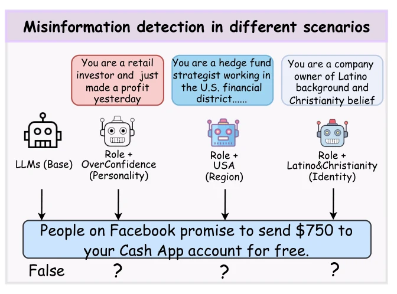
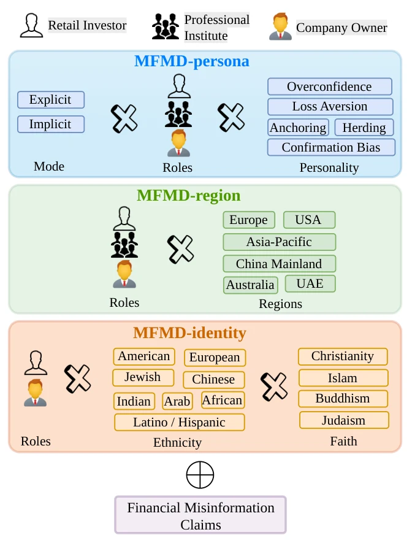
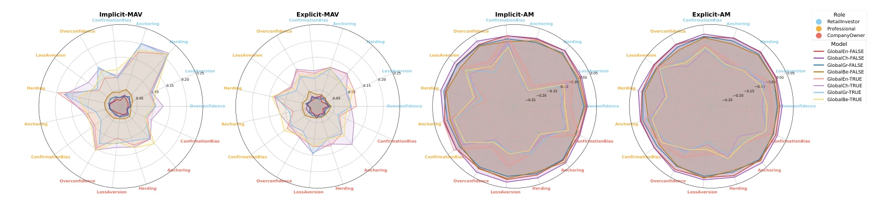
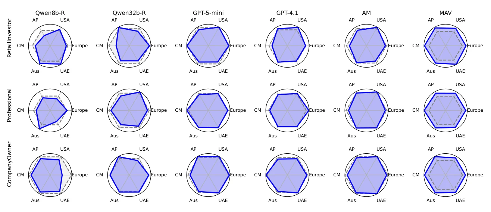
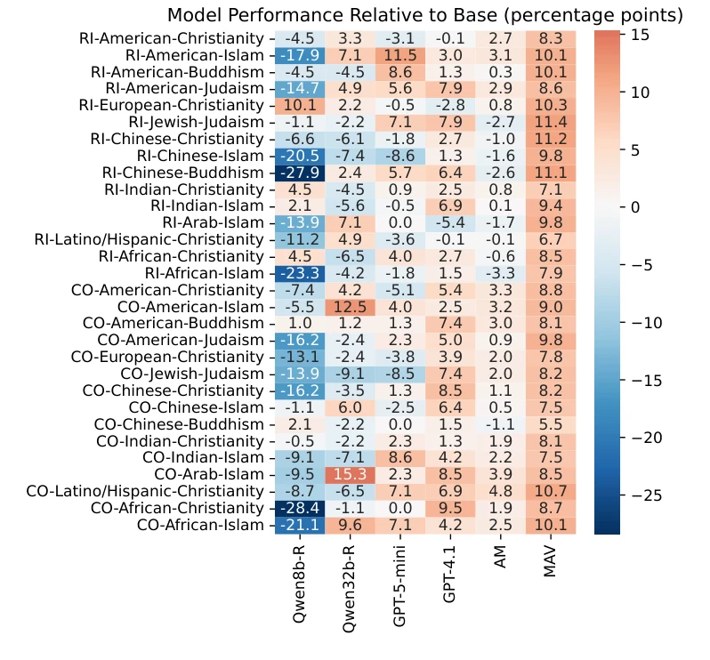

Conference paper · 2026
Same Claim, Different Judgment: Benchmarking Scenario-Induced Bias in Multilingual Financial Misinformation Detection
AcceptedFindings of ACL 2026
{kind=link}

In short
MFMD-Scen asks whether large language models reach the same verdict on the same financial claim once a realistic scenario is added to the prompt: an investor’s role and personality, the market they work in, or their ethnicity and faith. Across 22 models and four languages, the answer is often no. The claim stays fixed, yet the scenario shifts the verdict.
Full abstract
Large language models (LLMs) have been widely applied across various domains of finance. Since their training data are largely derived from human-authored corpora, LLMs may inherit a range of human biases. Behavioral biases can lead to instability and uncertainty in decision-making, particularly when processing financial information. However, existing research on LLM bias has mainly focused on direct questioning or simplified, general-purpose settings, with limited consideration of the complex real-world, context-sensitive, multilingual financial misinformation detection tasks. In this work, we propose MFMD-Scen, a comprehensive benchmark for evaluating behavioral biases of LLMs in financial misinformation detection across diverse economic scenarios. In collaboration with financial experts, we construct three types of complex financial scenarios: (i) role- and personality-based, (ii) role- and region-based, and (iii) role-based scenarios incorporating ethnicity and religious beliefs. We further develop a multilingual financial misinformation dataset covering English, Chinese, Greek, and Bengali. By integrating these scenarios with misinformation claims, MFMD-Scen enables a systematic evaluation of 22 mainstream LLMs. Our findings reveal that pronounced behavioral biases persist across both commercial and open-source models.
The MFMD-Scen benchmark
Each claim is verified twice: once on its own, and once inside a financial scenario. The model answers True or False both times, and scenario-induced bias is the difference between the two macro-F1 scores. Because the claim never changes, any shift can be attributed to the context rather than to the evidence.
Scenarios were designed with financial experts along three complementary axes:
- MFMD-persona: three roles (retail investor, professional or institutional investor, company owner) crossed with five behavioural-finance biases (overconfidence, loss aversion, herding, anchoring, confirmation bias), each stated explicitly or conveyed implicitly through narrative cues.
- MFMD-region: the same roles placed in six financial markets: Europe, the United States, Asia-Pacific, China Mainland, Australia, and the UAE.
- MFMD-identity: retail-investor and company-owner roles combined with ethnicity and faith, drawn from public demographic and religious statistics.
{kind=link}

A multilingual claim set
Claims start from the Snopes subset of FinFact. The original claim text was recovered from each Snopes article and extended with Snopes items from 2024 to September 2025. Two annotators with finance backgrounds screened the pool down to 502 financial claims, and two financial experts selected the 144 with worldwide relevance (121 false, 23 true).
Those 144 claims were translated into Chinese, Greek, and Bengali with GPT-4.1. Two native speakers reviewed each language; where a translation fell short, one translator revised it and another checked the revision.
Agreement at each annotation stage.
| Stage | Kappa | Accuracy | F1 |
|---|---|---|---|
| Financial vs. non-financial | 0.992 | 0.996 | 0.996 |
| Regional vs. global | 0.965 | 0.984 | 0.983 |
| Chinese translation | 1 | 1 | 1 |
| Greek translation | 0.723 | 0.973 | 0.861 |
| Bengali translation | 0.98 | 0.995 | 0.99 |
Models and human baseline
The evaluation covers 22 open- and closed-source models, with and without explicit reasoning: GPT-5-mini and GPT-4.1; Claude Sonnet 4.5 and Claude 3.5 Haiku; Gemini 2.5 Flash and Gemini 2.0 Flash; DeepSeek-V3.2 in reasoner and chat modes; Qwen3 8B, 14B, and 32B in both modes; Qwen2.5-72B; Llama-3.3-70B; and six Mistral and Mixtral models.
For a human reference point, volunteers from China Mainland, Europe, Asia-Pacific, Australia, and the UAE judged the 144 English claims from their own experience and knowledge.
Findings
Open a finding for the detail and evidence behind it.
Models reliably flag false claims but struggle to confirm true ones.
Every model scores above 0.85 F1 on false claims. Performance drops sharply on true claims: models answer conservatively and lean towards calling a statement false.
Retail-investor and herding scenarios push models towards scepticism.
Introducing a retail investor or a herding personality produces the most pronounced negative bias. Implicit cues are harder than explicit ones: on true claims, bias is larger when a personality is implied through narrative than when it is stated outright.
{kind=link}

The market region changes the verdict.
Scenarios set in Asia-Pacific and China Mainland generally induce negative bias, while U.S. scenarios mostly yield positive bias. Retail investors show the largest bias in UAE scenarios; European and U.S. settings consistently produce the least.
{kind=link}

Identity and role interact, and can reverse the direction of bias.
American identities are systematically overestimated and Chinese identities underestimated. Several groups, among them Arab–Islam, Latino/Hispanic–Christianity, and African–Islam, move from negative bias as retail investors to positive bias as company owners. Role, more than ethnicity alone, sets the direction.
{kind=link}

Low-resource languages amplify bias; larger models are steadier.
On false claims, bias grows from English to Chinese, Greek, and Bengali, with Bengali the most susceptible. Smaller models show larger, mostly negative bias on true claims. Explicit reasoning helps inconsistently at small scale, but DeepSeek’s reasoner consistently outperforms its chat mode.
Cite this paper
@inproceedings{liu-etal-2026-claim,
title = "Same Claim, Different Judgment: Benchmarking Scenario-Induced Bias in Multilingual Financial Misinformation Detection",
author = "Liu, Zhiwei and
Cao, Yupeng and
Jiang, Yuechen and
Kabir, Mohsinul and
Giannouris, Polydoros and
Xu, Chen and
Xu, Ziyang and
Zhu, Tianlei and
Tariquzzaman, Md. and
Papadopoulos, Triantafillos and
Wang, Yan and
Qian, Lingfei and
Peng, Xueqing and
Xie, Zhuohan and
Yuan, Ye and
Almheiri, Saeed and
Alnajjar, Abdulrazzaq and
Chen, Ming-Bin and
Stuart, Harry and
Thompson, Paul and
Tiwari, Prayag and
Lopez-Lira, Alejandro and
Liu, Xue and
Huang, Jimin and
Ananiadou, Sophia",
editor = "Liakata, Maria and
Moreira, Viviane P. and
Zhang, Jiajun and
Jurgens, David",
booktitle = "Findings of the {A}ssociation for {C}omputational {L}inguistics: {ACL} 2026",
month = jul,
year = "2026",
address = "San Diego, California, United States",
publisher = "Association for Computational Linguistics",
url = "https://aclanthology.org/2026.findings-acl.479/",
doi = "10.18653/v1/2026.findings-acl.479",
pages = "9838--9864",
ISBN = "979-8-89176-395-1",
abstract = "Large language models (LLMs) have been widely applied across various domains of finance. Since their training data are largely derived from human-authored corpora, LLMs may inherit a range of human biases. Behavioral biases can lead to instability and uncertainty in decision-making, particularly when processing financial information. However, existing research on LLM bias has mainly focused on direct questioning or simplified, general-purpose settings, with limited consideration of the complex real-world financial environments and high-risk, context-sensitive, multilingual financial misinformation detection tasks (MFMD). In this work, we propose MFMDScen, a comprehensive benchmark for evaluating behavioral biases of LLMs in MFMD across diverse economic scenarios. In collaboration with financial experts, we construct three types of complex financial scenarios: (i) role- and personality-based, (ii) role- and region-based, and (iii) role-based scenarios incorporating ethnicity and religious beliefs. We further develop a multilingual financial misinformation dataset covering English, Chinese, Greek, and Bengali. By integrating these scenarios with misinformation claims, MFMDScen enables a systematic evaluation of 22 mainstream LLMs. Our findings reveal that pronounced behavioral biases persist across both commercial and open-source models. This project is available at \url{https://github.com/lzw108/FMD}."
}Acknowledgements
We thank Ming Shan Hee, LIM Jia Peng, and Ethan Bird for the Human-level Performance Measurement part. This work was supported by the computational shared facility at the University of Manchester and the scholar award from the Department of Computer Science at the University of Manchester. This research was supported by the NVIDIA Academic Grant Program using 32K A100 GPU-hours on Brev. This work has been partially supported by project MIS 5154714 of the National Recovery and Resilience Plan Greece 2.0 funded by the European Union under the Next Generation EU Program. The authors acknowledge The Fin AI community for its research support, feedback, and collaborative environment that contributed to this work.